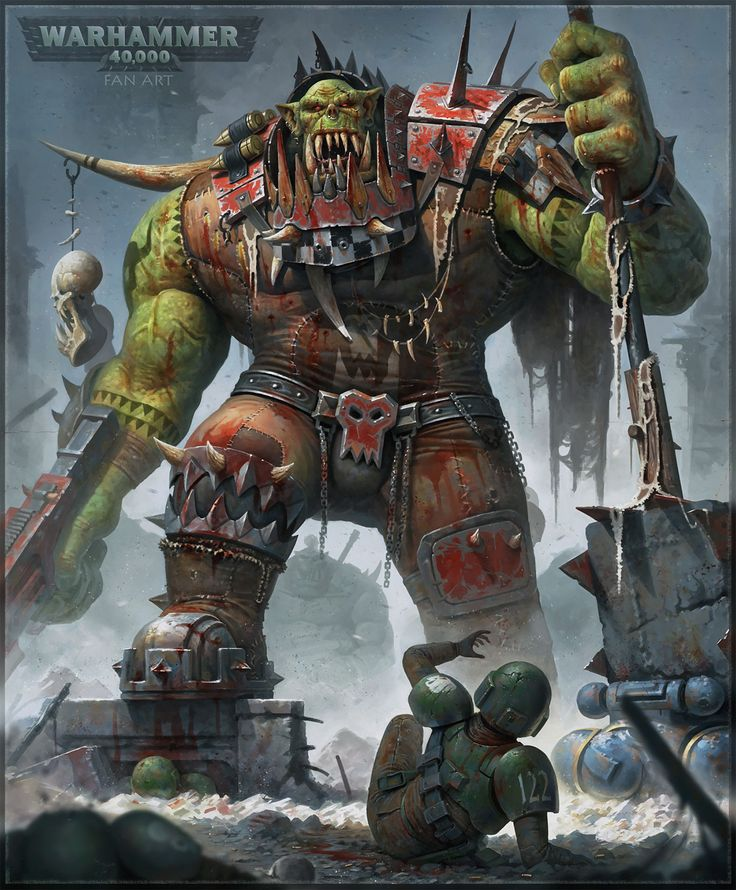

FACTIONS
"DISCOVER ALL THE FACTIONS IN THE WARHAMMER UNIVERSE"
THE IMPERIUM OF MANKIND

A vast, authoritarian human empire ruled by the God-Emperor, who is entombed in the Golden Throne. The Imperium is a brutal, xenophobic theocracy dedicated to humanity’s survival at any cost. Its armies include the Astra Militarum (Imperial Guard), the superhuman Space Marines, the zealous Adepta Sororitas, and the secretive Inquisition. It thrives on sheer numbers, faith, and advanced (but decaying) technology. Despite its size and strength, the Imperium is plagued by corruption, bureaucracy, and endless wars.
THE T'AU

A relatively young and technologically advanced faction that follows the philosophy of the "Greater Good," seeking unity among all species under their rule. Unlike the Imperium, they embrace innovation and diplomacy, but they aren’t above using force when necessary. Their military is based on high-tech battlesuits, drones, and long-range firepower, favoring precision and strategy over brute strength. Though they claim to be enlightened, their society is heavily controlled by the secretive Ethereal caste, which manipulates the population into unwavering loyalty.
ORKS

Brutish, war-loving, and utterly chaotic, Orks are the most numerous species in the galaxy. They exist for battle and destruction, growing stronger the more they fight. Orks are biologically engineered for war, with tough green skin, an instinctive ability to build ramshackle weapons, and a psychic field that makes their beliefs into reality (e.g., "red ones go faster"). They travel the galaxy in massive Waaagh!s—hordes of warriors united by a common warboss, leaving nothing but destruction in their wake.
Necrons
Ancient, undead-like robotic beings that once ruled the galaxy before going into hibernation for millions of years. Originally organic Necrontyr, they were deceived into transferring their souls into soulless metal bodies by the star-gods known as the C’tan. Now, they awaken from their tomb worlds with the goal of reclaiming the galaxy. Their armies are nearly indestructible, wielding devastating gauss weaponry, teleportation technology, and advanced AI. Some Necron dynasties seek to restore their former empire, while others simply want to annihilate all life.
THE TYRANIDS

An extragalactic swarm of bioengineered horrors that exist solely to consume all organic matter and evolve. The Tyranid Hive Mind controls countless swarms of creatures, from tiny Rippers to towering Carnifexes and monstrous Hive Tyrants. They adapt rapidly to threats, using genetic material from devoured species to grow stronger. Tyranids have no culture, diplomacy, or individuality—only an insatiable hunger that drives them to strip entire worlds bare. The Imperium fears that what they’ve encountered so far is only the vanguard of an even greater invasion.